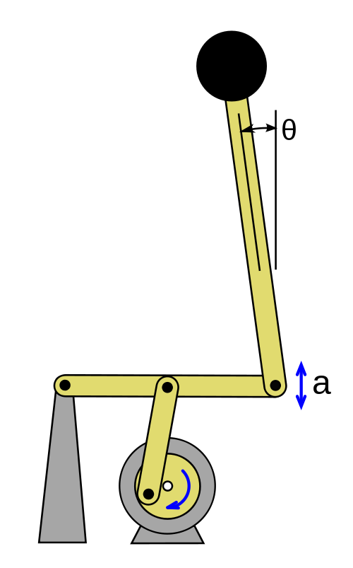
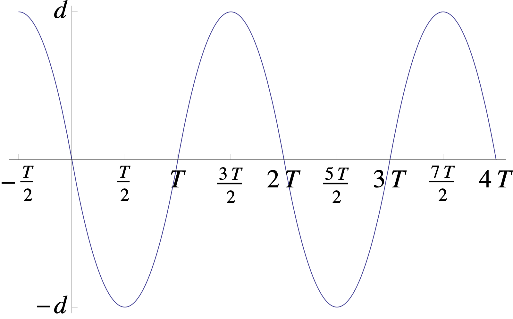

The simple pendulum has two rest points: it can be "hanging down" or "standing up". A pendulum in the "standing up" position is called an inverted pendulum. Since this rest point is asymptotically unstable, one rarely observes pendulums in this position! However, from the point of view of control theory, the inverted pendulum is much more interesting than the pendulum in its stable state. It turns out that the pendulum can be stabilized around the inverted rest point, using both open-loop and closed-loop control schemes. The Segway personal transportation device is a practical invention built precisely around this idea.
As our first example in control theory, we will show how the inverted pendulum can be stabilized in an open-loop control scheme whereby the base of the pendulum is made to oscillate along the vertical direction. This dynamical system is known as Kapitza's pendulum (see Figure 12). The amplitude and frequency of the oscillation need to be adjusted to suitable values to achieve stability, but in practice the effect is quite easy to achieve, and entertaining video demonstrations of this surprising and unintuitive result can be found online.

Let $\ell$ denote the length of the rod of the pendulum. We assume the base is moving along the vertical axis as a function $u(t)$ of time (which plays the role of the "control function" in this problem), and denote by $x$ the angle the pendulum forms with the upward-pointing vertical, so that $x=0$ (rather than $x=\pi$ with the more commonly used angular coordinate) represents the unstable equilibrium point of the inverted pendulum. The position of the swinging mass is $\mathbf{r}=(\ell\sin x, \ell \cos x + u(t))$. We can now write the kinetic energy, potential energy and the Lagrangian, as follows:
Therefore we have
and the Euler-Lagrange equation for this Lagrangian is
That is, the effect of the vertical driving acceleration $\ddot{u}(t)$ applied to the base point is to make the effective gravity felt by the pendulum change as a function of time. We shall now make some assumptions to simplify the analysis. First, we shall study the behavior in the vicinity of the rest point, so we can replace the equation with its linearized version
Next, we assume that $u(t)$ is a periodic function with period $2T$ and frequency $f = 1/2T$, and furthermore, we assume that its second derivative $\ddot{u}(t)$ takes only two values $\pm a$, changing its sign exactly every half-period $T$, so that the graph of $u$ over each half-period is a parabolic arc rather than the sinusoidal arc typically used for periodic motions (this can even be a realistic assumption depending on the way the driving mechanism operates in practice, but the main reason for assuming it is that it results in a simpler mathematical analysis); see Figure 13. With this assumption, the equation becomes
with the notation $\omega=\sqrt{g/\ell}$, $A=\sqrt{a/\ell}$, and where "$\pm$" denotes the square wave function
We assume that $A>\omega$, i.e., the "artificial gravity" induced by the vibrations dominates the gravity of the more usual type. It can be easily checked that the amplitude $d$ of the oscillation is given by

As a final notational step before we start the analysis, we do the usual trick of representing a second-order system as a planar first-order system:
Note that this is a linear, but time-dependent, system, so we can represent it in vector notation as
where $\mathbf{x}=(x,y)^\top$ and $B_t = \left( \begin{array}{cc} 0&1 \\ \omega^2\pm A^2 & 0 \end{array}\right)$.
We are now in a position to study when (as a function of the parameters $a, T, \ell, g$) we can expect the system to be stable at $x=0$. The idea is to reduce the problem to understanding the stability of an autonomous discrete-time dynamical system which we can explicitly compute. For real numbers $t_0<t_1$, define a map $\psi_{t_0,t_1}:\R^2\to\R^2$, analogous to the phase flow map $\varphi_t$ we studied for autonomous systems, as follows:
That is, $\psi_{t_0,t_1}$ evolves a point forward in time from time $t_0$ to time $t_1$. (In the case of an autonomous system, we could write this as $\varphi_{t_1-t_0}(\mathbf{x}_0)$ since it would depend only on the duration of the evolution rather than the specific starting and ending times.) The evolution maps $\psi_{t_0,t_1}$ have several important properties. First, they are linear, since the system (39) is linear. Second, they satisfy the composition property
or equivalently
since evolving a solution from time $t_0$ to $t_2$ can be done by evolving it up to time $t_1$ and then evolving the resulting point from $t_1$ to $t_2$. Third, because the matrix function $t\mapsto B_t$ in the equation (39) is periodic with period $2T$, we have
By the composition property (40), we can now express the solution $\mathbf{x}(t)$ with an initial condition $\mathbf{x}(0)=\mathbf{x}_0$ at time $0$ as the result of a sequence of evolution steps along small time intervals of length $T$. More precisely, if $n$ is an integer such that $2nT \le t < 2(n+1)T$, then we have
where we denote
The analysis will now revolve around an explicit computation of the $2\times 2$ matrices associated with the linear maps $S_\pm$ and their composition $P$, the period evolution map. A key observation is the following:
If $|\operatorname{tr}(P)|<2$ then the system (39) has a stable rest point at $\mathbf{x}=\mathbf{0}$.
Proof$P$ is a $2\times 2$ matrix of real numbers with determinant $\det(P)=\det(S_-)\det(S_+)=1$ (this fact also follows from Liouville's theorem). Its eigenvalues $\lambda_1, \lambda_2$ are the roots of a quadratic polynomial with real coefficients, and satisfy
If both eigenvalues are real then the fact that $\lambda_2=1/\lambda_1$ implies that
in contradiction to the assumption that $|\operatorname{tr}(P)|<2$. The only other possibility is that $\lambda_1$ and $\lambda_2$ are conjugate complex numbers, which must lie on the unit circle, since $\lambda_1\lambda_2 = \lambda_1 \overline{\lambda_1}= |\lambda_1|^2 = 1$. This implies that for some constant $C>0$, we have
for all $n\ge1$ and $\mathbf{x}\in \R^2$, since $\lambda_1=e^{i\theta}$ for some real $\theta$, and from linear algebra we know that by representing such a matrix in an appropriate basis one can bring it to the form of a rotation matrix $\left(\begin{array}{cc} \cos \theta & -\sin\theta \\ \sin\theta & \cos\theta\end{array} \right)$. In other words, this shows that the discrete-time dynamical system defined by the matrix $P$ has a (neutrally) stable rest point at $\mathbf{x}=\mathbf{0}$.
Finally, observe that the family of matrices $(\psi_{0,s})_{0\le s\le 2T}$ is the image of a compact interval $[0,2T]$ under a continuous map $s\mapsto \psi_{0,s}$, and therefore this set of matrices is compact, and hence bounded in norm, in the space of $2\times 2$ matrices. Therefore there is some constant $D>0$ such that
for any $\mathbf{y}\in\R^2$. Combining this with the previous comment and with (41), we get that
for all $t\ge 0$, which shows that $\mathbf{x}=\mathbf{0}$ is a neutrally stable rest point of the system (39).A$\square$
To compute $S_-$ and $S_+$, observe that they are both obtained by evolution of the system along time intervals for which the matrix $B_t$ is constant; for such intervals the system (39) behaves like an autonomous system, and can be solved explicitly using matrix exponentials.
The matrices $S_\pm$ are given by
where $k=\sqrt{A^2+\omega^2}=\sqrt{(a+g)/\ell}, j=\sqrt{A^2-\omega^2}=\sqrt{(a-g)/\ell}$.
ProofBy the comment above, we have
where we denote $M_+ = \left(\begin{array}{cc} 0 & T \\ k^2T & 0 \end{array}\right)$, $M_- = \left(\begin{array}{cc} 0 & T \\ -j^2 T & 0 \end{array}\right)$. Note that $M_\pm$ satisfy
As a result, it is easy to evaluate the matrix exponentials $\exp(M_\pm)$ by directly summing the power series $\sum_{n=0}^\infty \frac{1}{n!}M_{\pm}^n$ (since the even powers are scalar multiples of $I$ and the odd powers are scalar multiples of $M_\pm$) to obtain the expressions in (42). The computation is left as an exercise.A$\square$
Perform the power series summation outlined above to verify the formulas (42).
The final step consists of studying $\operatorname{tr}(P)=\operatorname{tr}(S_- S_+)$ to show that for an appropriate choice of parameters, stability can be achieved. Denote $\sigma = \sigma(a, g, \ell, T) = \operatorname{tr}(P)$. By the formulas (42), we have
We can now prove:
There are values of the parameters $a, g, \ell, T$ for which Kapitza's pendulum is stable.
ProofUsing the metric system of units, take $g=9.8\,\frac{\textrm{m}}{\textrm{sec}^2}$ (the Earth's gravitational constant), $\ell = 20\, \textrm{cm}$, $d=1\,\textrm{cm}$, $f=40\,\textrm{sec}^{-1}$. With these values we have $T=\frac{1}{80}\,\textrm{sec}$, $a=512\,\frac{\textrm{m}}{\textrm{sec}^2}$. For these parameters the computer returns the value
so in particular $|\sigma|<2$ and the pendulum is stable.A$\square$
It is possible to get a better understanding of the subset of the parameter space for which the motion is stable, at least for oscillations with small amplitude and high frequency, that explains why the "lucky" numbers above work to produce a stable value $|\sigma|<2$. This can be done by introducing two dimensionless parameters $w,z$, defined by
and to consider a limit in which both variables $w,z$ tend simultaneously to $0$ (with the variable $T$ changing accordingly).
Represent $\sigma$ as a function of the variables $w, z$, then expand $\sigma$ in a Taylor series in $w,z$, including all terms up to and including order $4$ (i.e., all monomials of the form $w^i z^j$ for $0\le i+j\le 4$). From this approximation, deduce that if $w,z\to 0$ in such a way that $w<cz$ where $c$ is a constant satisfying $0<c<\sqrt{2/3}$, then for small enough values of $w,z$ the stable regime $|\sigma|<2$ is entered, i.e., the motion becomes stable.